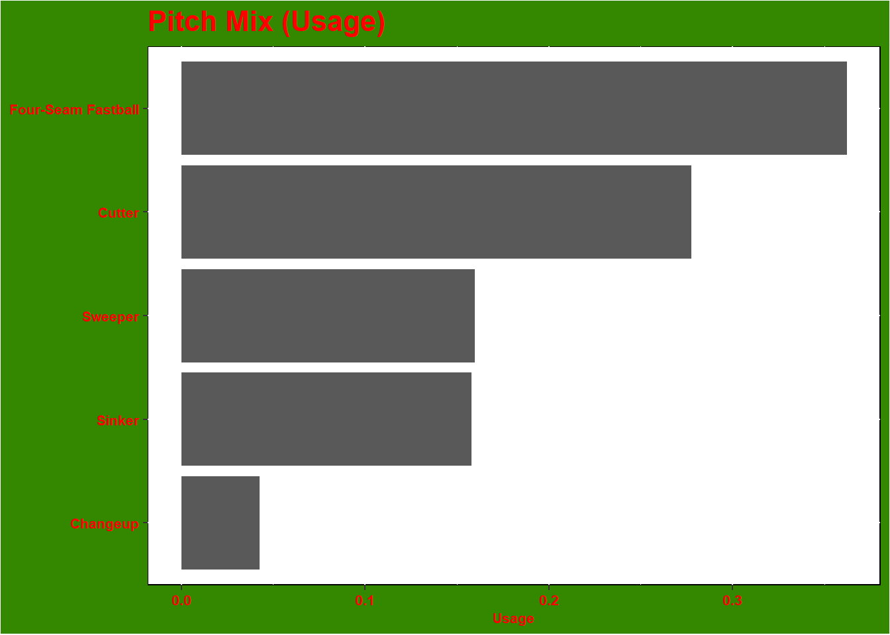
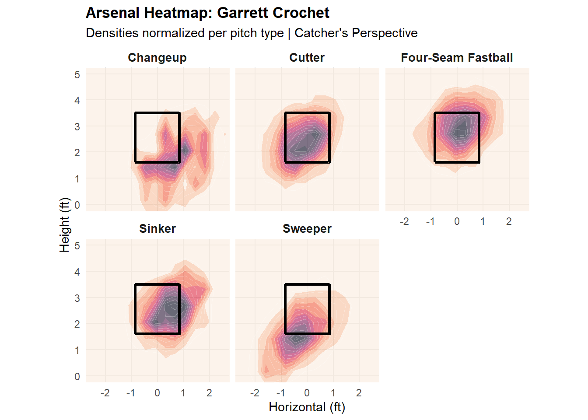
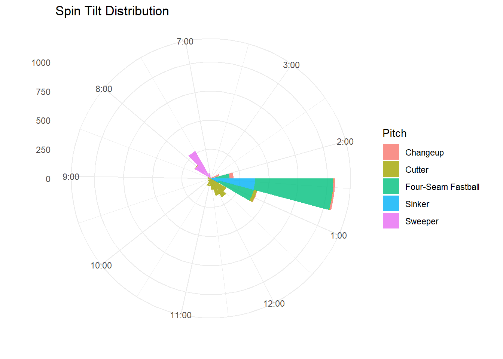

## Garrett Crochet
<table class="table" style="width: auto !important; margin-left: auto; margin-right: auto;">
<caption>Results (PA-grain)</caption>
<thead>
<tr>
<th style="text-align:left;"> matchup.pitcher.fullName </th>
<th style="text-align:right;"> PA </th>
<th style="text-align:right;"> AB </th>
<th style="text-align:right;"> H </th>
<th style="text-align:right;"> SO </th>
<th style="text-align:right;"> BB </th>
<th style="text-align:right;"> AVG </th>
<th style="text-align:right;"> K_pct </th>
<th style="text-align:right;"> BB_pct </th>
</tr>
</thead>
<tbody>
<tr>
<td style="text-align:left;"> Garrett Crochet </td>
<td style="text-align:right;"> 814 </td>
<td style="text-align:right;"> 762 </td>
<td style="text-align:right;"> 165 </td>
<td style="text-align:right;"> 255 </td>
<td style="text-align:right;"> 46 </td>
<td style="text-align:right;"> 0.217 </td>
<td style="text-align:right;"> 0.313 </td>
<td style="text-align:right;"> 0.057 </td>
</tr>
</tbody>
</table>
<div style="border: 1px solid #ddd; padding: 0px; overflow-y: scroll; height:350px; overflow-x: scroll; width:100%; "><table class="table" style="width: auto !important; margin-left: auto; margin-right: auto;">
<caption>Pitch Profile (Pitch-grain)</caption>
<thead>
<tr>
<th style="text-align:left;position: sticky; top:0; background-color: #FFFFFF;"> matchup.pitcher.fullName </th>
<th style="text-align:left;position: sticky; top:0; background-color: #FFFFFF;"> details.type.description </th>
<th style="text-align:right;position: sticky; top:0; background-color: #FFFFFF;"> Pitches </th>
<th style="text-align:right;position: sticky; top:0; background-color: #FFFFFF;"> Swings </th>
<th style="text-align:right;position: sticky; top:0; background-color: #FFFFFF;"> Whiffs </th>
<th style="text-align:right;position: sticky; top:0; background-color: #FFFFFF;"> Contact </th>
<th style="text-align:right;position: sticky; top:0; background-color: #FFFFFF;"> ZoneP </th>
<th style="text-align:right;position: sticky; top:0; background-color: #FFFFFF;"> OZoneP </th>
<th style="text-align:right;position: sticky; top:0; background-color: #FFFFFF;"> Chase </th>
<th style="text-align:right;position: sticky; top:0; background-color: #FFFFFF;"> ZSwings </th>
<th style="text-align:right;position: sticky; top:0; background-color: #FFFFFF;"> OContact </th>
<th style="text-align:right;position: sticky; top:0; background-color: #FFFFFF;"> ZContact </th>
<th style="text-align:right;position: sticky; top:0; background-color: #FFFFFF;"> Swing_pct </th>
<th style="text-align:right;position: sticky; top:0; background-color: #FFFFFF;"> Whiff_pct </th>
<th style="text-align:right;position: sticky; top:0; background-color: #FFFFFF;"> Contact_pct </th>
<th style="text-align:right;position: sticky; top:0; background-color: #FFFFFF;"> Zone_pct </th>
<th style="text-align:right;position: sticky; top:0; background-color: #FFFFFF;"> Chase_pct </th>
<th style="text-align:right;position: sticky; top:0; background-color: #FFFFFF;"> ZSwing_pct </th>
<th style="text-align:right;position: sticky; top:0; background-color: #FFFFFF;"> OContact_pct </th>
<th style="text-align:right;position: sticky; top:0; background-color: #FFFFFF;"> ZContact_pct </th>
<th style="text-align:right;position: sticky; top:0; background-color: #FFFFFF;"> Velo </th>
<th style="text-align:right;position: sticky; top:0; background-color: #FFFFFF;"> Extension </th>
<th style="text-align:right;position: sticky; top:0; background-color: #FFFFFF;"> Spin </th>
<th style="text-align:right;position: sticky; top:0; background-color: #FFFFFF;"> IVB </th>
<th style="text-align:right;position: sticky; top:0; background-color: #FFFFFF;"> HB </th>
<th style="text-align:right;position: sticky; top:0; background-color: #FFFFFF;"> BBE </th>
<th style="text-align:right;position: sticky; top:0; background-color: #FFFFFF;"> HardHit </th>
<th style="text-align:right;position: sticky; top:0; background-color: #FFFFFF;"> HardHit_pct </th>
<th style="text-align:right;position: sticky; top:0; background-color: #FFFFFF;"> EV </th>
<th style="text-align:right;position: sticky; top:0; background-color: #FFFFFF;"> LA </th>
<th style="text-align:right;position: sticky; top:0; background-color: #FFFFFF;"> Usage </th>
</tr>
</thead>
<tbody>
<tr>
<td style="text-align:left;"> Garrett Crochet </td>
<td style="text-align:left;"> Four-Seam Fastball </td>
<td style="text-align:right;"> 1141 </td>
<td style="text-align:right;"> 559 </td>
<td style="text-align:right;"> 142 </td>
<td style="text-align:right;"> 417 </td>
<td style="text-align:right;"> 617 </td>
<td style="text-align:right;"> 524 </td>
<td style="text-align:right;"> 127 </td>
<td style="text-align:right;"> 432 </td>
<td style="text-align:right;"> 75 </td>
<td style="text-align:right;"> 342 </td>
<td style="text-align:right;"> 0.490 </td>
<td style="text-align:right;"> 0.254 </td>
<td style="text-align:right;"> 0.746 </td>
<td style="text-align:right;"> 0.541 </td>
<td style="text-align:right;"> 0.242 </td>
<td style="text-align:right;"> 0.700 </td>
<td style="text-align:right;"> 0.591 </td>
<td style="text-align:right;"> 0.792 </td>
<td style="text-align:right;"> 96.400 </td>
<td style="text-align:right;"> 6.762 </td>
<td style="text-align:right;"> 2458.565 </td>
<td style="text-align:right;"> 15.945 </td>
<td style="text-align:right;"> -8.031 </td>
<td style="text-align:right;"> 136 </td>
<td style="text-align:right;"> 69 </td>
<td style="text-align:right;"> 0.507 </td>
<td style="text-align:right;"> 91.971 </td>
<td style="text-align:right;"> 18.522 </td>
<td style="text-align:right;"> 0.362 </td>
</tr>
<tr>
<td style="text-align:left;"> Garrett Crochet </td>
<td style="text-align:left;"> Cutter </td>
<td style="text-align:right;"> 875 </td>
<td style="text-align:right;"> 479 </td>
<td style="text-align:right;"> 107 </td>
<td style="text-align:right;"> 372 </td>
<td style="text-align:right;"> 536 </td>
<td style="text-align:right;"> 339 </td>
<td style="text-align:right;"> 104 </td>
<td style="text-align:right;"> 375 </td>
<td style="text-align:right;"> 56 </td>
<td style="text-align:right;"> 316 </td>
<td style="text-align:right;"> 0.547 </td>
<td style="text-align:right;"> 0.223 </td>
<td style="text-align:right;"> 0.777 </td>
<td style="text-align:right;"> 0.613 </td>
<td style="text-align:right;"> 0.307 </td>
<td style="text-align:right;"> 0.700 </td>
<td style="text-align:right;"> 0.538 </td>
<td style="text-align:right;"> 0.843 </td>
<td style="text-align:right;"> 90.864 </td>
<td style="text-align:right;"> 6.711 </td>
<td style="text-align:right;"> 2597.340 </td>
<td style="text-align:right;"> 6.189 </td>
<td style="text-align:right;"> 3.661 </td>
<td style="text-align:right;"> 178 </td>
<td style="text-align:right;"> 64 </td>
<td style="text-align:right;"> 0.360 </td>
<td style="text-align:right;"> 86.734 </td>
<td style="text-align:right;"> 9.712 </td>
<td style="text-align:right;"> 0.278 </td>
</tr>
<tr>
<td style="text-align:left;"> Garrett Crochet </td>
<td style="text-align:left;"> Sweeper </td>
<td style="text-align:right;"> 503 </td>
<td style="text-align:right;"> 304 </td>
<td style="text-align:right;"> 120 </td>
<td style="text-align:right;"> 184 </td>
<td style="text-align:right;"> 193 </td>
<td style="text-align:right;"> 310 </td>
<td style="text-align:right;"> 140 </td>
<td style="text-align:right;"> 164 </td>
<td style="text-align:right;"> 48 </td>
<td style="text-align:right;"> 136 </td>
<td style="text-align:right;"> 0.604 </td>
<td style="text-align:right;"> 0.395 </td>
<td style="text-align:right;"> 0.605 </td>
<td style="text-align:right;"> 0.384 </td>
<td style="text-align:right;"> 0.452 </td>
<td style="text-align:right;"> 0.850 </td>
<td style="text-align:right;"> 0.343 </td>
<td style="text-align:right;"> 0.829 </td>
<td style="text-align:right;"> 82.625 </td>
<td style="text-align:right;"> 6.668 </td>
<td style="text-align:right;"> 2375.769 </td>
<td style="text-align:right;"> -2.879 </td>
<td style="text-align:right;"> 13.780 </td>
<td style="text-align:right;"> 85 </td>
<td style="text-align:right;"> 22 </td>
<td style="text-align:right;"> 0.259 </td>
<td style="text-align:right;"> 83.674 </td>
<td style="text-align:right;"> 10.365 </td>
<td style="text-align:right;"> 0.160 </td>
</tr>
<tr>
<td style="text-align:left;"> Garrett Crochet </td>
<td style="text-align:left;"> Sinker </td>
<td style="text-align:right;"> 498 </td>
<td style="text-align:right;"> 232 </td>
<td style="text-align:right;"> 42 </td>
<td style="text-align:right;"> 190 </td>
<td style="text-align:right;"> 278 </td>
<td style="text-align:right;"> 220 </td>
<td style="text-align:right;"> 83 </td>
<td style="text-align:right;"> 149 </td>
<td style="text-align:right;"> 60 </td>
<td style="text-align:right;"> 130 </td>
<td style="text-align:right;"> 0.466 </td>
<td style="text-align:right;"> 0.181 </td>
<td style="text-align:right;"> 0.819 </td>
<td style="text-align:right;"> 0.558 </td>
<td style="text-align:right;"> 0.377 </td>
<td style="text-align:right;"> 0.536 </td>
<td style="text-align:right;"> 0.723 </td>
<td style="text-align:right;"> 0.872 </td>
<td style="text-align:right;"> 95.997 </td>
<td style="text-align:right;"> 6.742 </td>
<td style="text-align:right;"> 2398.674 </td>
<td style="text-align:right;"> 8.076 </td>
<td style="text-align:right;"> -16.281 </td>
<td style="text-align:right;"> 97 </td>
<td style="text-align:right;"> 33 </td>
<td style="text-align:right;"> 0.340 </td>
<td style="text-align:right;"> 85.166 </td>
<td style="text-align:right;"> 2.167 </td>
<td style="text-align:right;"> 0.158 </td>
</tr>
<tr>
<td style="text-align:left;"> Garrett Crochet </td>
<td style="text-align:left;"> Changeup </td>
<td style="text-align:right;"> 134 </td>
<td style="text-align:right;"> 57 </td>
<td style="text-align:right;"> 24 </td>
<td style="text-align:right;"> 33 </td>
<td style="text-align:right;"> 26 </td>
<td style="text-align:right;"> 108 </td>
<td style="text-align:right;"> 36 </td>
<td style="text-align:right;"> 21 </td>
<td style="text-align:right;"> 15 </td>
<td style="text-align:right;"> 18 </td>
<td style="text-align:right;"> 0.425 </td>
<td style="text-align:right;"> 0.421 </td>
<td style="text-align:right;"> 0.579 </td>
<td style="text-align:right;"> 0.194 </td>
<td style="text-align:right;"> 0.333 </td>
<td style="text-align:right;"> 0.808 </td>
<td style="text-align:right;"> 0.417 </td>
<td style="text-align:right;"> 0.857 </td>
<td style="text-align:right;"> 87.676 </td>
<td style="text-align:right;"> 6.770 </td>
<td style="text-align:right;"> 1710.647 </td>
<td style="text-align:right;"> 6.387 </td>
<td style="text-align:right;"> -11.958 </td>
<td style="text-align:right;"> 14 </td>
<td style="text-align:right;"> 2 </td>
<td style="text-align:right;"> 0.143 </td>
<td style="text-align:right;"> 78.171 </td>
<td style="text-align:right;"> -12.143 </td>
<td style="text-align:right;"> 0.043 </td>
</tr>
</tbody>
</table></div>

